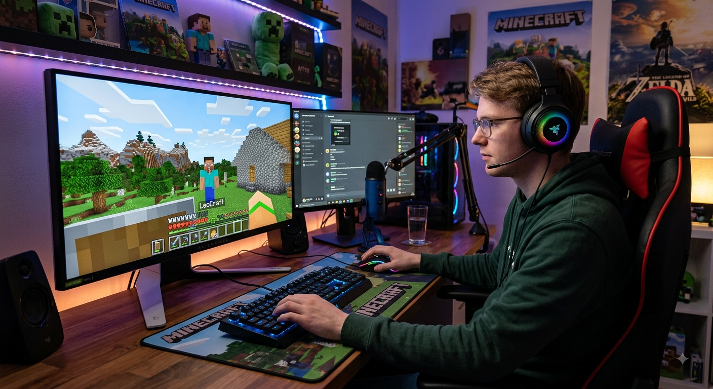

Sejam bem vindos ao site oficial do servidor de Minecraft MINE BLOCK.
: Miguel
À sua rente há um monitor grande exibindo o jogo *Minecraft*, mostrando uma paisagem com blocos de grama, árvores, uma casa de pedra e o personagem Steve na tela. Ao lado, há um segundo monitor exibindo o aplicativo Discord, um microfone condensador de mesa e uma luminária LED roxa ao fundo. A prateleira acima do monitor tem colecionáveis e pelúcias do jogo *Minecraft*.">